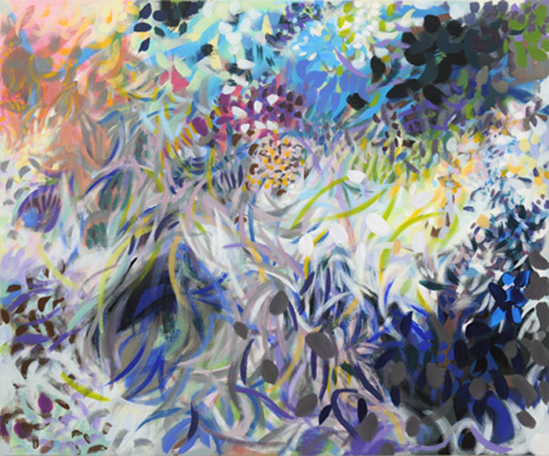
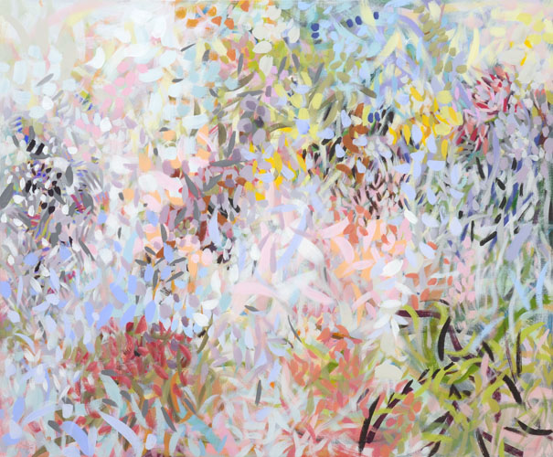
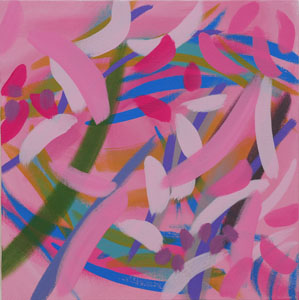
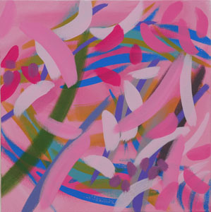
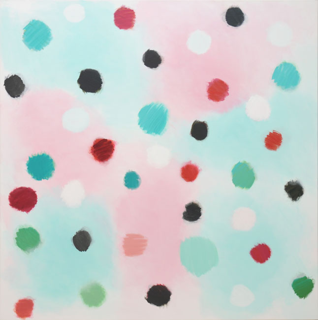
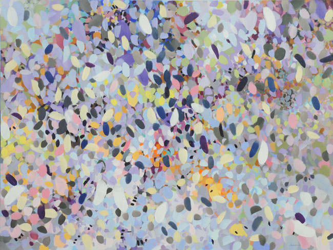
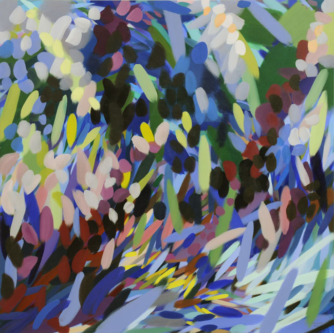
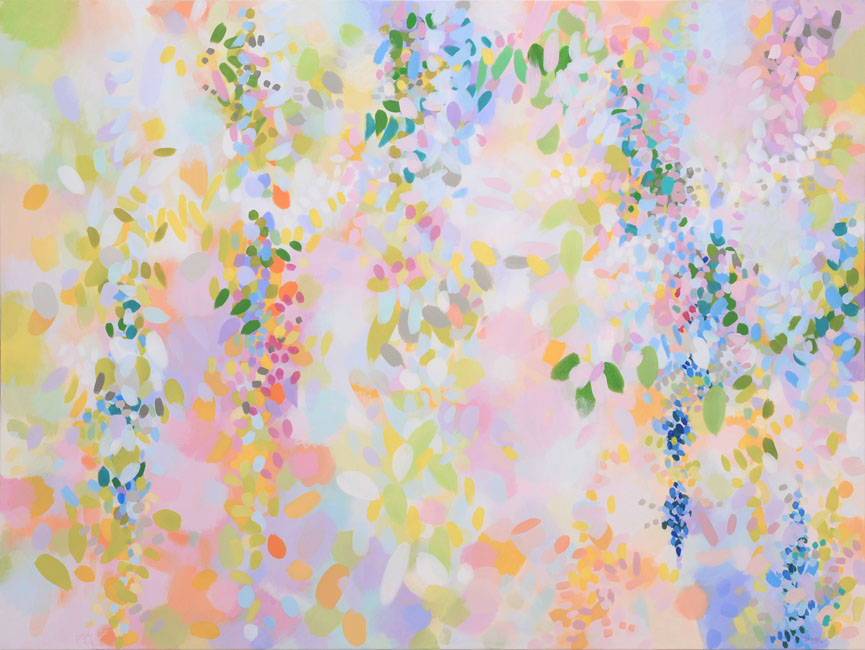
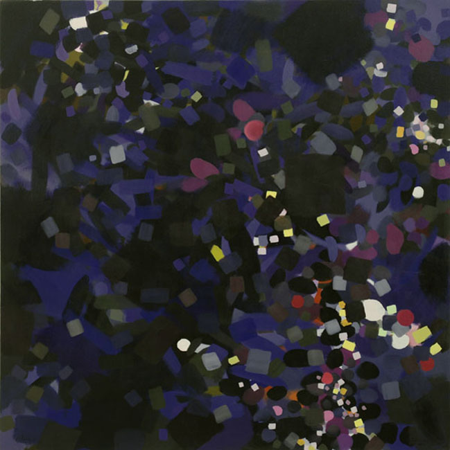

1.. Vancouver Island , 2008. Acrylic on canvas, 42 x 42 inches, 107 x 107 cm.
2..
2.. Munir, 2008. 48 x 58 inches. 122 x 147 cm.
3..
3.. Bright Wild Weeds, 2008. 48 x 58 inches. 122 x 147 cm.
4..
 5..
5..
4.. Plum Kisses, 2008. Acrylic on canvas, 18 x 18 inches. 46 x 46 cm.
5.. Pink Flying Over Pink, 2008. Acrylic on canvas, 18 x 18 inches. 46 x 46 cm.
6..
6.. Emirates 37 for 7, 2008. 80 x 80 inches. 203 x 203 cm.
7..
7.. Constructivist Student, 2008. Acrylic on canvas, 60 x 80 inches, 152 x 203 cm.
8..
8.. Green to Flower, 2008. 80 x 80 inches. 203 x 203 cm.
9..
9.. Through to Light, 2008. 60 x 80 inches. 152 x 203 cm.
10..
10.. Night Landing, 2008. 66 x 66 inches. 168 x 168 cm.
![[Art on the Net]](/images/artnet_button.gif)